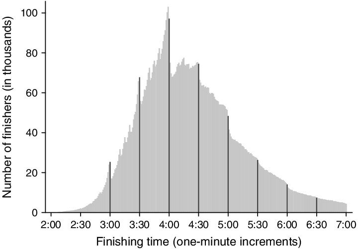
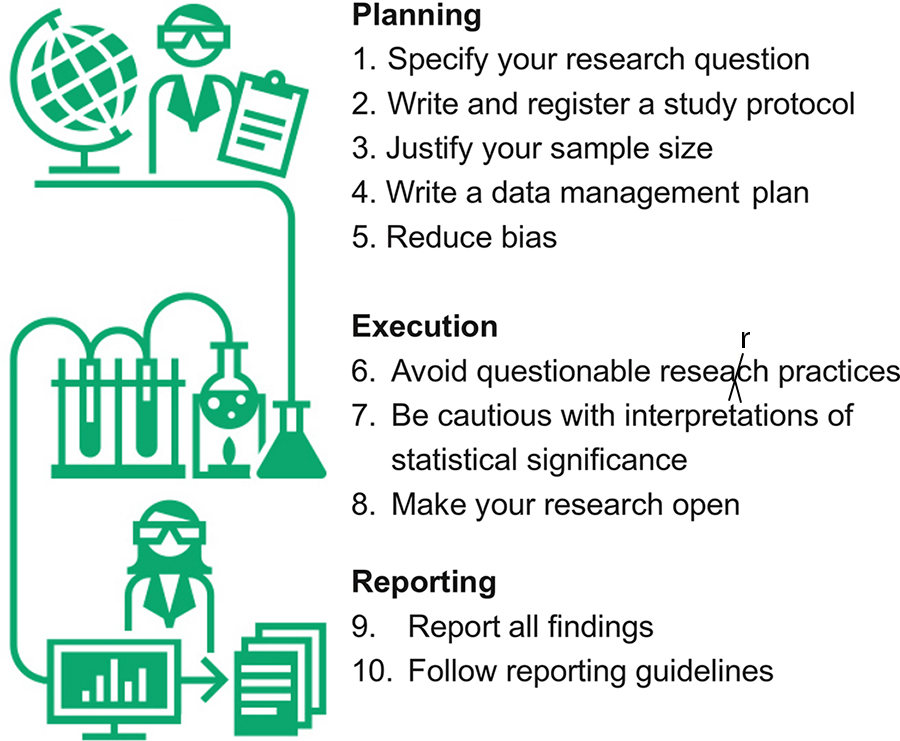
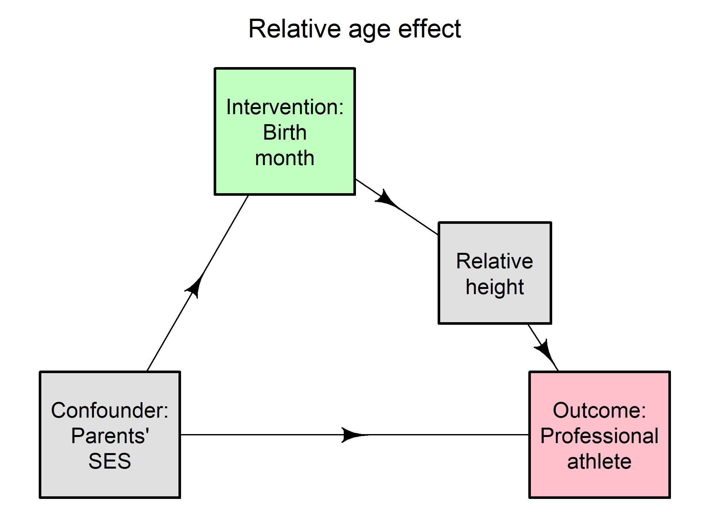
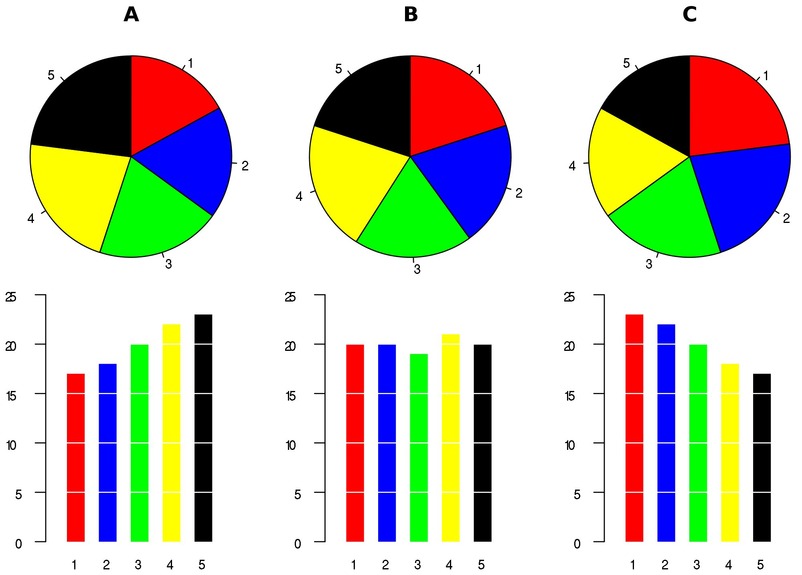
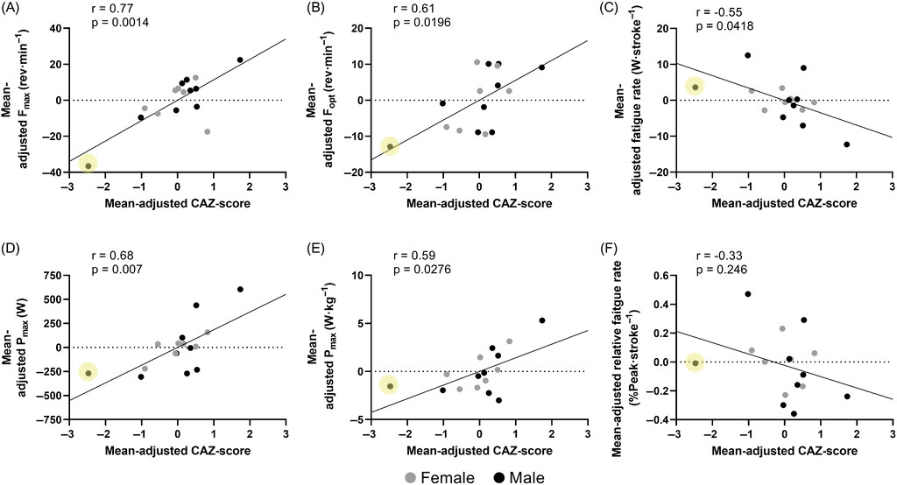

Statistical thinking
Adrian Barnett
13 May 2025
13 May 2025
Queensland University of Technology
Photo by Mick Haupt on Unsplash
Questions welcome
Basics
- I can’t teach you statistics in a day
- We have some tutorials
- These slides are available online and have links to papers mentioned https://agbarnett.github.io/talks/AIS/slides

My statistics background
- University College London 1991–94
- SmithKline Beecham 1994–96
- Medical Research Council 1996–99
- PhD time series 1999–2002
- University of Queensland 2001–2007
- Queensland University of Technology 2007–censored
- President Statistical Society of Australia 2018–2020

Statistical thinking
Use your brain
Avoid statistical recipes
Avoid bright-line thinking
Stress test your models
Be prepared to be wrong

Group question: what are we trying to achieve with research?

Dogma
Why do people fall back on dogma and recipes
Because they don’t know what they are doing
We can demonstrate some tests are better
Small cell sizes, t-test is better than Fisher.
What is statistics?
- Statistics uses data to inform decision making
- Data literacy is a key skill for most researchers
- Bland and Altman: “Bad statistics makes bad research, bad research may lead to bad medicine, and bad medicine may cost lives.”
- David Spiegelhalter: “Why do people find probability so unintuitive and difficult? …
- … Well after years of careful research I have finally concluded that it’s because probability actually is unintuitive and difficult.”
Simple is elegant
“There are only a handful of ways to do a study properly but a thousand ways to do it wrong”, David Sackett
“You cannot fix with analysis what you bungle by design”, from Planning Research on Higher Education by Light, Singer and Willett
More effort in the design and data collection will generally mean less work for the statistics
Ten simple rules for good research practice

Specific problem in sports science
“Statistical errors are common in many biomedical fields. We believe the nature and impact of these errors to be great enough in sports science and medicine to warrant special attention”
.
Serious problem
Also a serious in sports science
Evidence pyramid (ideal)

Evidence jumble (reality)
- The quality of the study matters way more than the design
Mistakes
A big mistake at any stage at the research process will undermine all your science
The worst errors are those that are undetected
Data collection

Blinding
Spend time on your data
- Excel is useful, but there are many common mistakes
- Be consistent in naming variables and categories, e.g., never: “Male”, “male” and “m” in same variable
- Write dates as YYYY-MM-DD, e.g, 2018-10-16
- Don’t put multiple variables in one cell, e.g., never “Injury - morning”
- Never record information in cell colours
- One rectangular data set per Excel sheet
- Please please please read and keep this paper: Karl W. Broman & Kara H. Woo (2018) Data Organization in Spreadsheets, The American Statistician, 72:1, 2–10
Blinding
Large and common source of bias
P-values

Multiple testing on steroids
Coin tossing (a simple experiment)
We want to know if a coin is fair
Simple experiment of tossing it 10 times (should be a sufficient sample size)
What would we expect to see if the coin was fair?
Coin tossing (a simple experiment)
We want to know if a coin is fair
Simple experiment of tossing it 10 times (should be a sufficient sample size)
What would we expect to see if the coin was fair?
Null hypothesis,
- H\(_0\): the coin is fair
- H\(_1\): the coin is not fair
or in stats language
H\(_0\): Probability(heads) = 0.5
H\(_1\): Probability(heads) \(\neq\) 0.5
Simulated data using a fair coin
- The number of heads in 10 tosses from 1,000 experiments
Simulated data using a fair coin
- Rare to get 10 heads: 2 in 1000 times, probability = 0.002
Simulated data using a fair coin
- Quite rare to get 9 or more heads: 13 in 1000 times, p = 0.013
Simulated data using a fair coin
- Numbers often in the range 4 to 6: 493 out of 1000, p = 0.493 \(\approx\) 0.5
Testing a new coin (running a new study)
- Run a new experiment with our coin of unknown fairness
- Compare new results with the distribution from a fair coin
- If we observed 10 heads we would be inclined to think it wasn’t fair
Testing a new coin (running a new study)
- Run a new experiment with our coin of unknown fairness
- Compare new results with the distribution from a fair coin
- If we observed 10 heads we would be inclined to think it wasn’t fair
- Based on our fair coin distribution this would only happen 2 in 1000 times (probability = 0.002)
- p-value is the probability of observing equally extreme data if the null hypothesis is true
- p-value is a surprise value
- If we saw such an extreme result we’d probably want to take a good look at the coin, or ask who ran the experiment (do we trust the data?)
The context of the experiment
A tea-drinker claims to be able to tell whether the tea or milk was poured into the cup first
A music expert claims to be able to distinguish a page of Haydn score from a page of Mozart
A drunken friend says he can predict the outcome of a fair coin
Which ones (if any) do you think are likely?
The context of the experiment
- In ten trials of each experiment the correct guess is made every time
- Each experiment has the same p-value (0.002 from our simulations)
- Are we convinced that the music expert has a talent?
- Do we really think the drunk friend is psychic?
The context of the experiment
- In ten trials of each experiment the correct guess is made every time
- Each experiment has the same p-value (0.002 from our simulations)
- Are we convinced that the music expert has a talent?
- Do we really think the drunk friend is psychic?
- We don’t treat the evidence equally for each trial
- Instead we judge the evidence based on context and our prior experience
- p-values must be seen in context (part of the story)
p-value \(<\) 0.05 \(\Rightarrow\) statistical significance
There’s a generally accepted rule that a p-value \(<\) 0.05 is statistically significant, whilst any p-value \(\geq 0.05\) is not
Means there’s a 0.05 (1 in 20) chance of rejecting the null hypothesis when it’s true
Historical hangover from early work by Roland Fisher in 1926:
“If one in twenty does not seem high enough odds, we may, if we prefer it, draw the line at one in fifty or one in a hundred. Personally, the writer prefers to set a low standard of significance at the 5 per cent point, and ignore entirely all results which fails to reach this level. A scientific fact should be regarded as experimentally established only if a properly designed experiment rarely fails to give this level of significance.”
p-value \(<\) 0.05 \(\Rightarrow\) statistical significance
- Means that studies with a p-value of 0.0499999 are “accepted”, whilst those with a p-value of 0.0500000 are not, but
- this is only being a tiny jump in evidence
- and is a jump that is not itself statistically significant! E.g., in study with an outcome of body mass index it might be the difference between one subject cutting their toenails or not!
p-value \(<\) 0.05 \(\Rightarrow\) statistical significance
Means that studies with a p-value of 0.0499999 are “accepted”, whilst those with a p-value of 0.0500000 are not, but
- this is only being a tiny jump in evidence
- and is a jump that is not itself statistically significant! E.g., in study with an outcome of body mass index it might be the difference between one subject cutting their toenails or not!
Lazy decision rule and should be avoided
A p-value of 0.06 is substantially different than a p-value of 0.99
Always write the p-value as a number, never write “Non significant” or “p \(>\) 0.05” for a p-value above 0.05
Over-testing
Judge p-values on a sliding scale and in context
What is the ultimate decision?
• Previous experiments on coin tossing and tea drinking are small and contained
• We are usually interested in big hypothesis, e.g.:
-Is a low-carb, high-fat diet effective for athletes?
-Can genetic testing predict talent?
What is the ultimate decision?
• Previous experiments on coin tossing and tea drinking are small and contained
• We are usually interested in big hypothesis, e.g.:
-Is a low-carb, high-fat diet effective for athletes?
-Can genetic testing predict talent?
• We rarely make a decision about such hypotheses based on one study
• p-values are usually part of the evidence (or story)
Accumulating evidence
Cumulative meta‐analysis of physical activity effect on long‐term behaviour change
The bias for “significance”
- RCT of a fabricated journal manuscript with two versions:
- One with statistically significant results (P = 0.003)
- One with no difference (P = 0.18)
- Sample size of 210 peer reviewers
The bias for “significance”
RCT of a fabricated journal manuscript with two versions:
- One with statistically significant results (P = 0.003)
- One with no difference (P = 0.18)
Sample size of 210 peer reviewers
Reviewers given the positive version were more likely to:
- Recommend publication (97% vs 80%, P \(<\) 0.001)
- Detect errors (0.9 vs 0.4, P \(<\) 0.001)
- Award higher scores to the identical methods section (8.2 vs 7.5, P = 0.005)
Confidence intervals
Confidence intervals
A 95% confidence interval will reach the same conclusions as a two-sided 5% p-value
Picture shows confidence intervals (horizontal lines), means (black dots), and null hypothesis of no change (horizontal dotted line)
Confidence intervals
- The important number for confidence intervals is usually zero
- E.g., “The new treatment reduced the number of hospital infections by 12 per 1000 admissions (95% CI: -6, 30)”
- So at the lowest end the new treatment actually increased the number of infections by 6 per 1000 admissions
- Confidence intervals are better than p-values because they contain more information and they test the null hypothesis
- For rate ratios or odds ratios the null hypothesis is at one, e.g., “The rate of death was 2.0 in the treatment group (95% CI: 1.2, 3.0)” — which would mean a statistically significant increase in deaths
Overlapping intervals
- Be careful about judging statistical significance between two groups from confidence intervals
- Picture assumes equal standard errors (confidence interval widths) — even harder to judge if this isn’t true
- (Previous graph compared CI with a fixed point)
Ring toss
Calculating a confidence interval is like throwing a ring toss
A larger ring is more likely to include the target
Rings either include or exclude the target
Causal analysis
“What causes what?” is a common question in research
Not purely statistical
Use your expertise
Effect of warming up on the risk of injury
Red cards
Researchers’ choices

Confounders
Often wrongly defined in papers
Must effect both the outcome and the intervention
Confounder must occur before the intervention
Causal pathway
- Don’t adjust for variables on the causal pathway

Don’t use the future
- Don’t adjust for variables that happen after the outcome
Tutorial
Research question: Are football referees more likely to give red cards to dark-skin-toned players than to light-skin-toned players?
What is the PICO: Population, Intervention, Control, Outcome?
Draw a causal diagram
Myth-busting #1 – Normality
YOU WANT LUMPY DATA!
Plots
A good graph is a great way to show your findings
Not all evidence is about hypothesis tests
“Give the viewer the greatest number of ideas in the shortest time with the least ink in the smallest space”, Tufte, The Visual Display of Quantitative Information
Marathon times
Terrible plots 🤪

Pie charts 🤮
White space dogma
Add lancet picture, talk again about difference between the original distribution and the mean. Find a similar picture from sports science.
Sample to get normality. Make a video
Always start at zero
Don’t always start at zero

Misleading
Add plot
Physician age
Add two versions of the same plot
Pie charts are terrible

Bar charts #1 …
… should never be used for continuous data

Bar charts #2 …
… should never be used when change is important

Example
Exercise induced plasma volume expansion lowers cardiovascular strain during 15-km cycling time-trial in acute normobaric hypoxia
Alternative plot

Join individuals

Tables
Tables are another useful way to display results, but are also often done badly
Number overload
Inter- and intra-microcycle external load analysis in female professional soccer players: A playing position approach

Plot instead of table
Scaling (metres)
| Microcycle | Position | Total Distance |
|---|---|---|
| M1 | Central defender | 22524 |
| M1 | Fullback | 22496 |
| M1 | Central midfielder | 23555 |
| M1 | Forwards | 19112 |
| M2 | Central defender | 24108 |
| M2 | Fullback | 23725 |
| M2 | Central midfielder | 22510 |
| M2 | Forwards | 28250 |
Scaling (kilometres)
| Microcycle | Position | Total Distance |
|---|---|---|
| M1 | Central defender | 22.5 |
| M1 | Fullback | 22.5 |
| M1 | Central midfielder | 23.6 |
| M1 | Forwards | 19.1 |
| M2 | Central defender | 24.1 |
| M2 | Fullback | 23.7 |
| M2 | Central midfielder | 22.5 |
| M2 | Forwards | 28.2 |
Decimal places
Outliers
Don’t automatically delete outliers that don’t fit the data
Look out for outliers and influential variables
Influential observation example
Influential observation example
Influential observation example - with
Influential observation example - without
Outliers and influential observations
If all your results rely on one person/observation, then your results are likely not generalisable. This must be acknowledged in your write-up.
“A systematic literature search of 4,622 articles in […] sport science found that only 9.05% (99% CI: 4.87%-14.99%) reported employing outlier detection practices” DOI: 10.1080/02640414.2024.2443313
“29 of 100 papers published in Science, Nature and PNAS […] stated significances (or their absence) are based on the presence of a single influential data point.” DOI: 10.1101/2024.10.30.621016v1
Technical stuff
- Use the following statistics to look for outliers and influential observations:
- Residuals (should always check)
- Cook’s distance
- DFBETA

Embrace outliers
The most exciting phrase to hear in science, the one that heralds new discoveries, is not “Eureka” but “That’s funny”, Isaac Asimov
“Outliers were removed when the residual had a Studentized residual < -4 or > 4”

Software
Correlation is not causation
Elite players have nice kit
Having nice kit does not make you an elite player
- Great software does not make you a data ninja

Pre-registration
ANZCTR https://www.anzctr.org.au/
As predicted https://aspredicted.org/
Further reading